3 Experimental paradigm
for fMRI
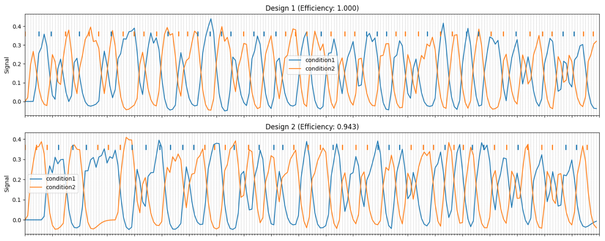
In this section
Technical aspects of an fMRI experiment
Software
Implementation details
Software
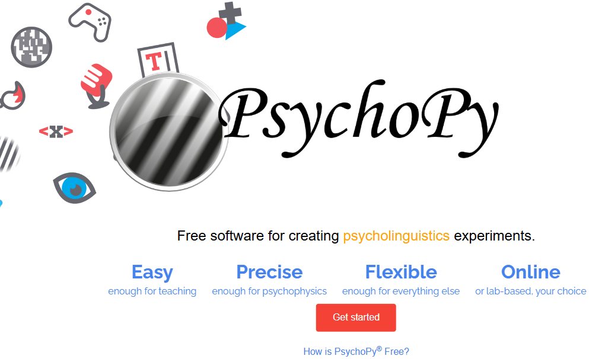
| Feature | PsychoPy | Psychtoolbox |
|---|---|---|
| GUI | limited | no |
| Mac/Windows | yes | if payed |
| Linux | (no) | yes |
| Degree of hardware control and precision | less | more |
| Advanced functionality | no | yes |
| Timing accuracy | less | more |
| Version compativility | no | yes |
| Standalone | yes | no (MATLAB or Octave) |
Runs
chunks of 5-10 minute length
ideally containing all experimental conditions (there are exceptions)
one run - one start of the experimental script
one paradigm run corresponds to one fMRI time series file
Typically repeated multiple times to fill about 1 hour of scanning
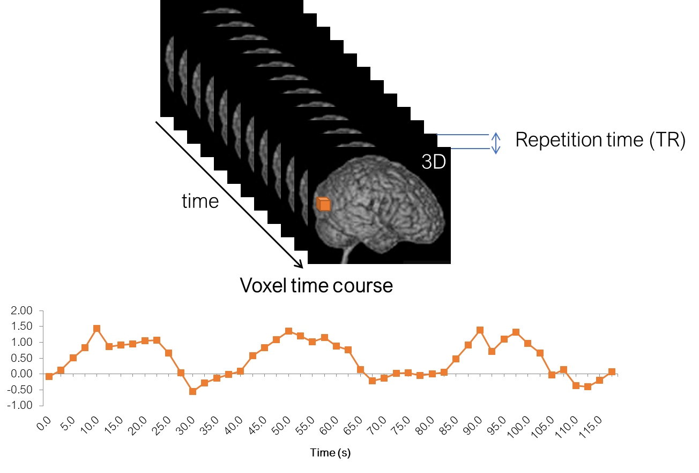
Start screen
The script should start by showing a welcome message or instruction reminder
It should be waiting for key “5” (scanner “trigger”)
This is needed to synchronize the fMRI signal acquisition with your paradigm
T1 equilibration wait time
- After the start screen, there should be a period of 5 - 10 seconds of nothing happening; this is needed to discard initial scanner artifacts
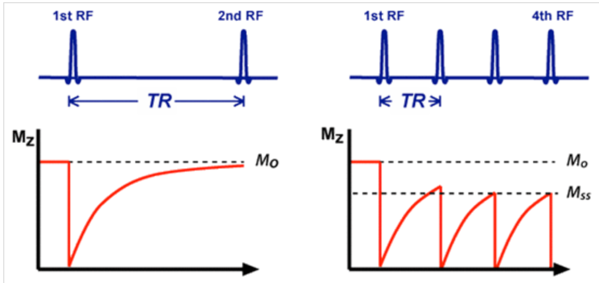
This is more of a historical practice that remains from old times.
Back in the day, people even waited a certain amount of volumes before starting the paradigm. This led to misalignment of fMRI and paradigm timings, and to analysis errors.
Modern Siemens scanners discard initial volumes automatically without saving them, so you don’t need to care about it. Furthermore, preprocessing software runs additional tests to detect nonsteady state volumes. These volumes (if detected), can be added as niussance regressors to the analysis.
Behind the scenes
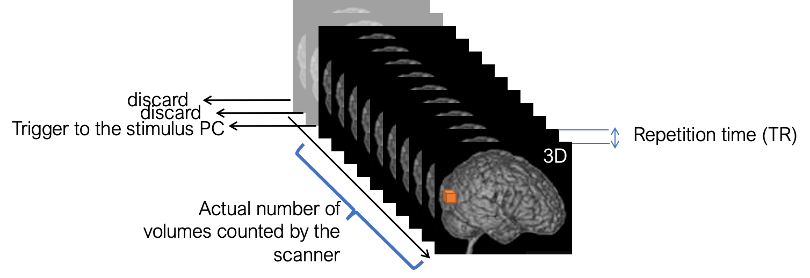
Video presentation
Monitor
(VR) Goggles
Audio
Problem: continuous scanner noise
Solution: High-quality auditory presentation or acquisition interruption
Ear phones
Head phones
Subject responses
Subject keys
1, 2, 3, 4, [], 6, 7, 8, 9
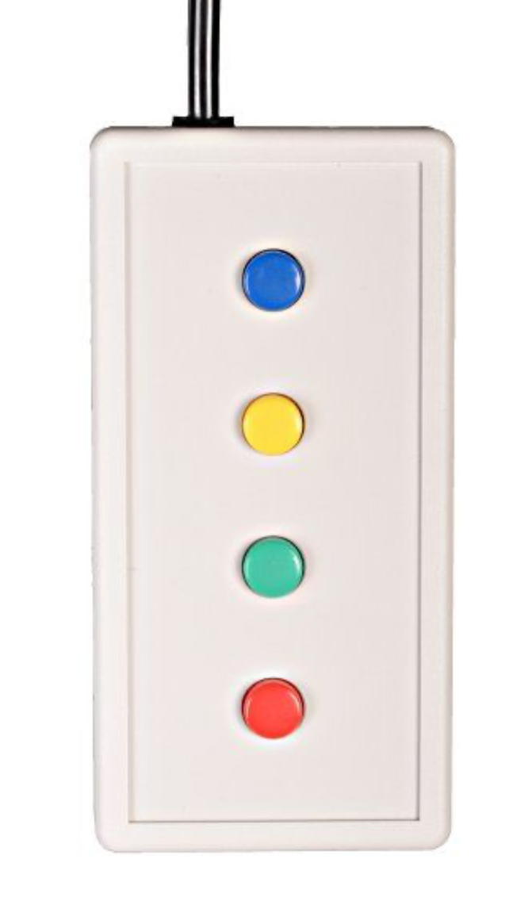
Joystick
Vigilance check
- If the subject does not have a task, it is important to make sure they are still paying attention to the paradigm and not falling asleep.
- This can be done by introducing a fixation task
- For example, the fixation point can change color or shape, and the subject has to press a button when they notice it.
- In any case, it is useful to give subjects feedback on their performance!
Paradigm events
Throughout the experimental run, we save all important information that happened, such as: - Which condition was presented at which time - Which button was pressed at which time
It is generally encouraged to save as much information as possible, as it can be useful for later analysis and troubleshooting. This is especially important for complex paradigms with many conditions and/or response options. Better save to much than too little!
Carryover effects
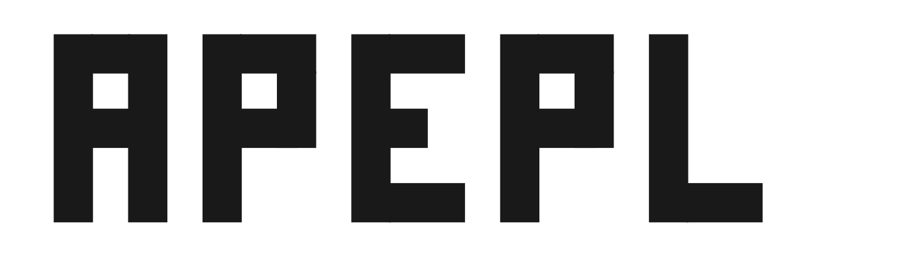
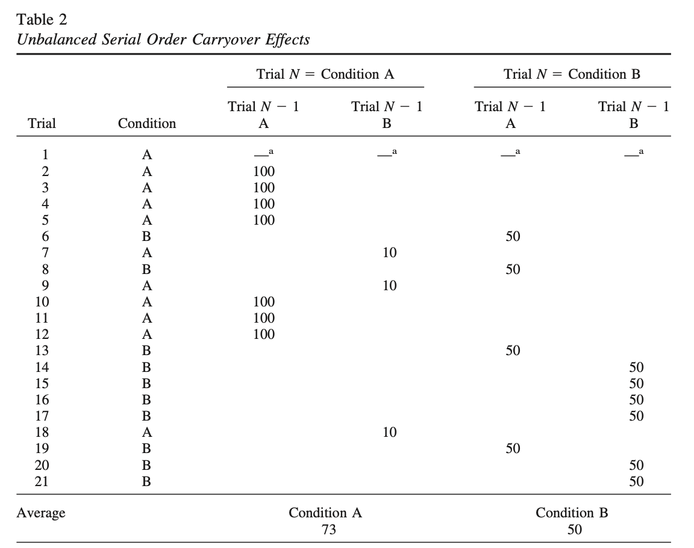
(Brooks 2012); code available at https://supp.apa.org/psycarticles/supplemental/a0029310/MET-Brooks20100184-R-S1.pdf
Software
Optseq2
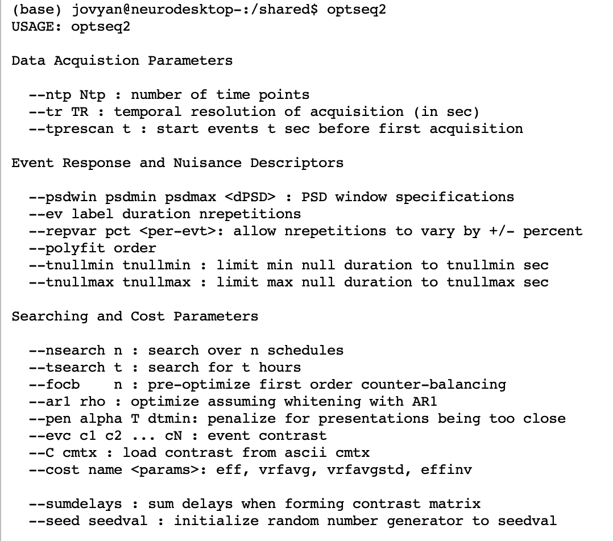
Optimize-x
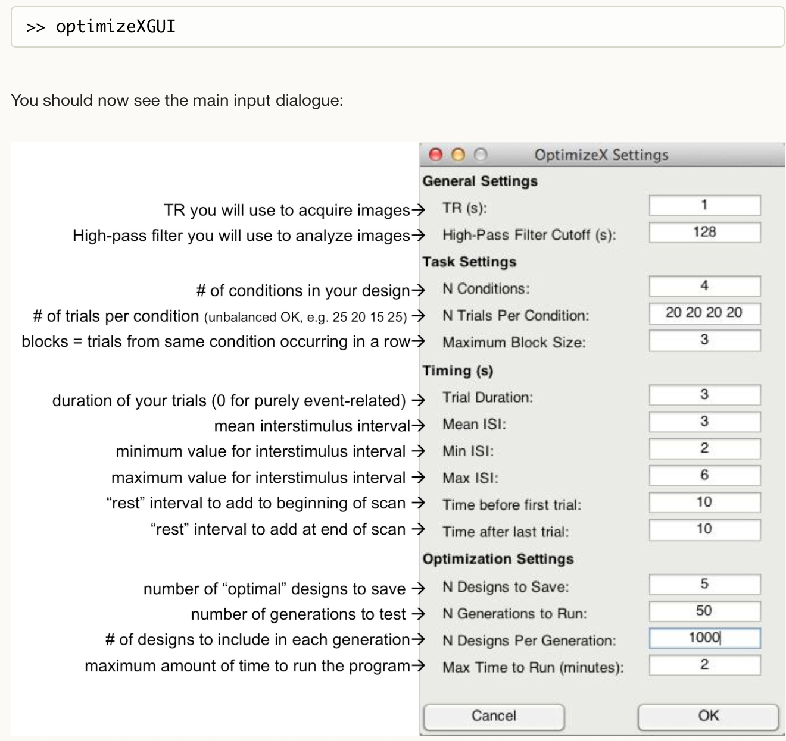
Neuropower/neurodesign
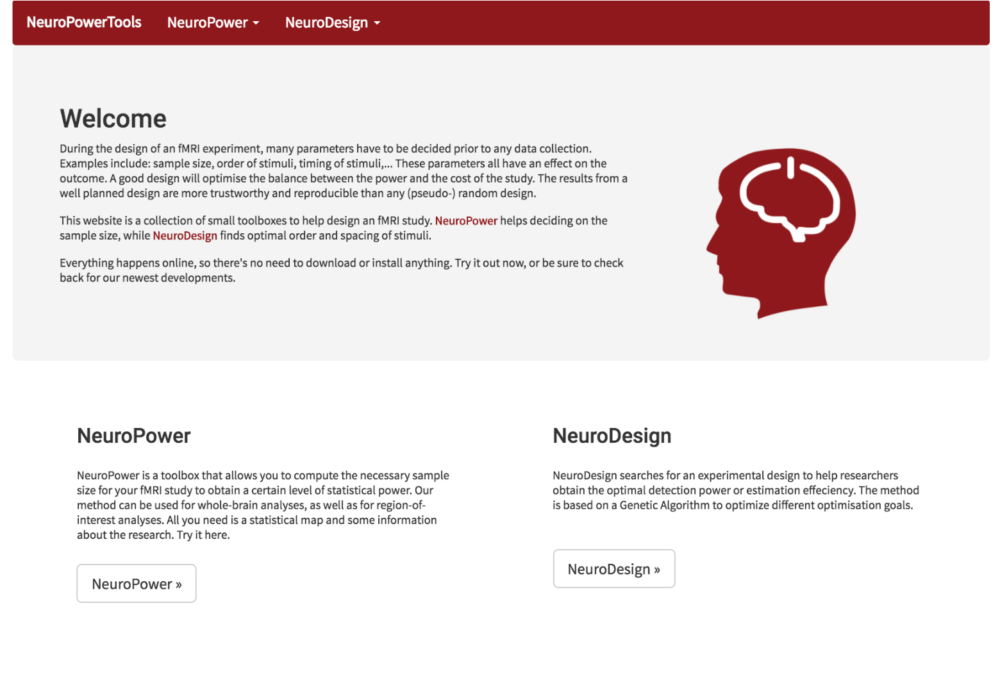
Neurodesign advantages
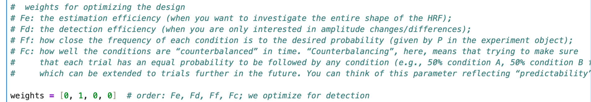
Python code
Optimization of multiple aspects simultaneously
Less requirements on experiment timings
On neurodesk
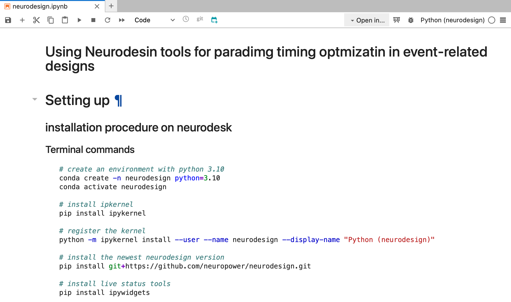
BIDS plugin for PsychoPy
Should be installed and enabled to save events (conditions and button presses) in a comprehensive and standardized manner
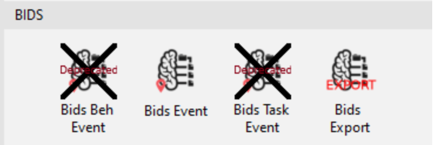
This will also make our data analysis easier
A warning on BIDS event:
do not rely on BIDS events exclusively; save as much information as possible on your experimental design
check the timing of your paradigm to make sure there are no unexpected delays